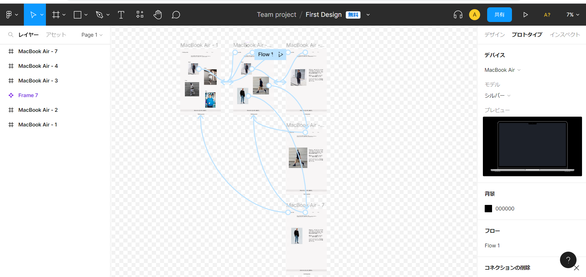

FigmaでどのようなことができるのかをUdemyで学習しておりました。XDと使用感が似ているためすぐに操作感になれることができました。どのようなものが作りたいのかをプロトタイプとして可視化できるようになったことで、相手との円滑なコミュニケーションが図れるようになりました。
URL
サイト等でお見せできるものがないため、ページ上部で添付している画像のみとなります。
担当
デザイン / 編集・構築
デザイン
ワイヤーフレームについて、ユーザーが度の導線で進むと離脱率が低くなるのかを考えながら学習をしておりました。また、ボタンやアイコンも自作で作りつつユーザーがどのようなボタンだと推したくなるのかを考えて作成をしていました。
目的
Figmaの操作習得を主軸で操作。どのようにコンポーネントを選別するのかを考え、Figmaのファイル内もきれいに整頓して使用することを癖付けていました。